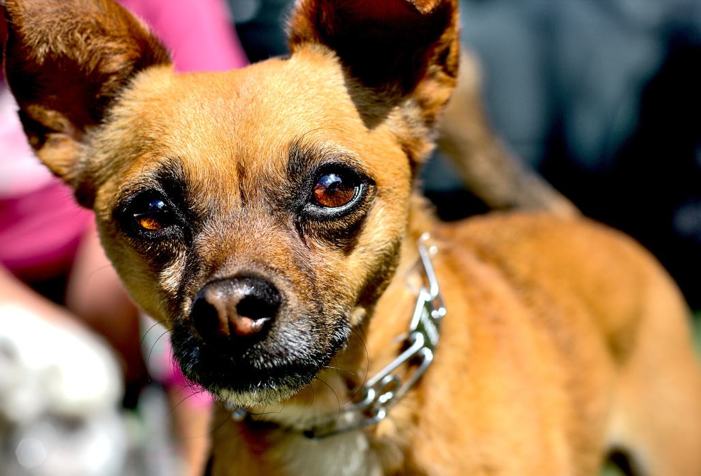
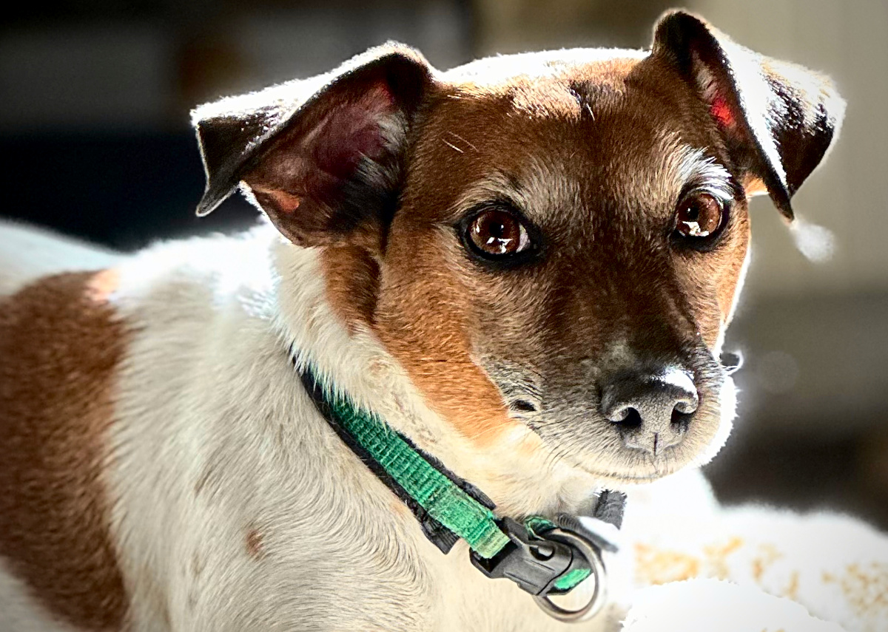

ben.atlarge Dog photography Warrenville, Illinois
BEN.ATLARGE
For twelve months I am photographing one shelter. Every dog that comes through it, and every way they leave.
- Running
- Twelve months
- Subject
- One shelter
- Outcomes
- All of them
- Based
- Warrenville, IL
01
The year
One shelter. Twelve months. Every dog that comes through the door.
A dog photographed badly sits in a kennel longer. That is the whole argument, and it is the reason I started carrying a camera into shelters in the first place. But a good listing photograph is a transaction, and it disappears the moment the dog is adopted. What happens to the animal before and after that frame is the part nobody keeps.
So I am keeping it. For twelve months I am working inside one shelter, photographing intakes, the long middle where nothing happens, the days that go well and the days that don't. Not breed-standard portraits against a gray backdrop. Photographs made so the animal's life and spirit are the subject, which is slower work and needs the kind of access you only get by showing up for a year.
I will publish the outcomes that don't end well. That is not a disclaimer, it is the point. A record that only shows the adoptions is an advertisement, and there are enough of those. If a dog is returned twice, or goes out on a behavioral hold, or is euthanized, that is in here too, handled carefully and with the shelter's knowledge.
What the shelter gets
- Every usable frame, full resolution, for listings, socials, grant applications, print, anything.
- No credit required, no license conditions, no fee.
- Work scheduled around intake, not the other way around.
- Right of refusal on any photograph before it appears here.
What I ask for
- Regular access for twelve months, roughly one day a week.
- Permission to follow individual animals from intake to outcome.
- Honesty about the hard cases, and the freedom to publish them.
- Names. The dogs get named here, not numbered.
02
Dispatches
One entry per dog, from intake to whatever happens. Posted as the year goes.
Not started
The shelter is not chosen yet. Once the agreement is signed this fills up, one dog at a time, and it does not get tidied afterward.
03
Prints
Work from before the project. Dogs I know, mostly badly behaved.




04
Contact
If you run a shelter or a rescue and the year above sounds like something you want happening in your building, this is the only step. Tell me roughly how many animals you move in a month and who I would be working around.
If you are here about photographing your own dog, that is through here.
I answer everything, eventually and in order.